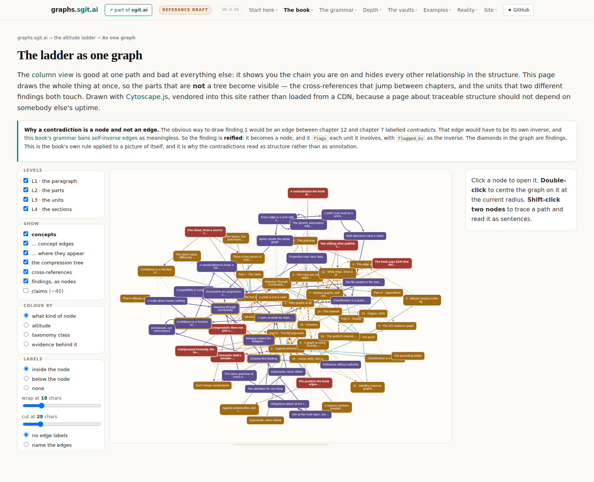

Dev pack v0.3.27: the second book
The plan to write this book again, from the top down, as a graph. It follows two founder memos of 23 August 2026 that cancelled the planned refactor in favour of starting properly: this is the plan to write the plan. Nothing in it is implemented, and file 09 lists the eight questions only the founder can answer.
The three governing rules
- The graph comes before the prose, at every altitude. No unit of text is written until the node it projects exists, carries its typed edges, and its evidence resolves.
- The first book is frozen, and the second book copies from it. Material moves by copy, never by reference, and every copy records where it came from.
- Every claim the book makes about itself is computed on every build. If the build cannot compute it, the book does not assert it.
The pack
| # | File | What it gives you | Raw |
|---|---|---|---|
| 00 | Dev Pack: The Second Book, Written Top Down | Orientation, the three governing rules, and what is already decided. | .md |
| 01 | The Memos, And What Each Instruction Commits Us To | The founder's two memos, verbatim, with every instruction mapped to what it commits the work to. | .md |
| 02 | What Exists Today, And What Happens To Each Of It | The audit. Every unit, section, conclusion and generator, with a carry / lift / rewrite / drop verdict. | .md |
| 03 | Freezing The First Book | How the first edition is frozen, where it lives, and the front page that explains the sequence of events. | .md |
| 04 | The Argument, Top Down | The spine, top down: five statements, their evidence, and the descent through five altitudes. | .md |
| 05 | Architecture: The Decisions, As ADRs | The decisions, as ADRs: five source trees, six node families, computed themes, generated grammar. | .md |
| 06 | The Plumbing | The graph format, the unit format, the generators, and the seven new gates. | .md |
| 07 | The Visualisations | Which views are instruments and which are reading aids, the conventions, and eight figures of what exists now. | .md |
| 08 | The Implementation Plan | Seven phases, each ending at a gate, and the two ways the plan fails. | .md |
| 09 | Verification, And What Only The Founder Can Decide | Acceptance criteria, what the rewrite does to the ten open decisions, and the eight questions only the founder can answer. | .md |
The one thing this pack is built on
The retrospective over the previous fourteen releases established that the visualisations did not produce the insights: the arithmetic behind them did, and the visualisation is how a person notices. Every finding in that run came from converting a sentence somebody wrote into something a build computes. That is why this pack's first constraint is that the generators are load-bearing and the renderers are replaceable, and why ADR-4 makes the book's themes computed rather than declared: a theme is where evidence converges, not where the author says it is.
Where the work starts from
Eight figures, captured from the live site at v0.3.26. They are evidence of the starting point, not designs for the second book. The distinction that matters across all of them is in file 07: every one of the aggregate views produced a finding, and none of the per-item views did.




For an agent
The pack is ten markdown files under /dev-packs/v0.3.27__the-second-book/, and those files are the source of truth: every page here renders one of them client-side and cannot drift from it. Read 00__README.md first for the three governing rules and what is already decided. Status is PROPOSED throughout: nothing in this pack has been implemented, and file 09 separates what is settled from what is waiting on the founder. Do not treat any ADR as decided until the corresponding open question is answered.